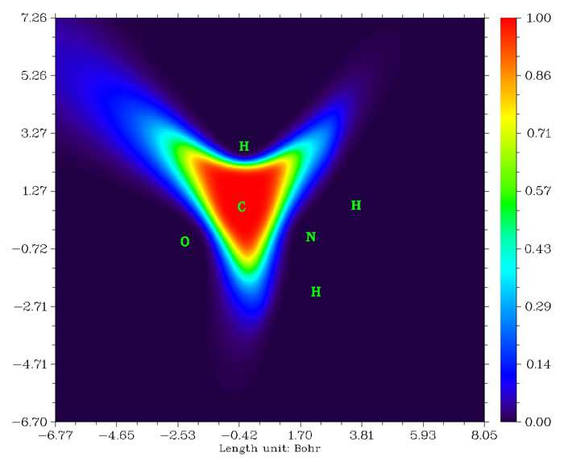

模糊原子空间分析（Fuzzy atomic space analysis）（15）¶
Multiwfn manual, p.222–239.英文原文见同名 English 章节。 Images:
../imgs/.
密度矩阵算出搜索列表中每个原子的布居数并打印。若一些相邻原子有大的布居数，表明这些原子上可能出现高占据数的多中心轨道；而布居数低的原子在后续搜索中常可忽略。因此该选项对建立用户主导搜索很有帮助。
14 把 AdNDP 轨道导出为 .mwfn 文件（14 Export AdNDP orbitals to .mwfn file）：经该选项，全部已挑出的 AdNDP 轨道将导出为当前文件夹的 AdNDP.mwfn（.mwfn 格式介绍见 2.5 节）。以该文件为输入文件，可对 AdNDP 轨道做各种分析（如经主功能 8 做轨道成分分析，经主功能 4 绘制平面图）。注意若有 N 个基函数、已挑出 M 个 AdNDP 轨道，则 AdNDP.mwfn 中的前 M 个轨道对应 AdNDP 轨道，其余 N-M 个轨道无意义可直接忽略。
15 求并输出 AdNDP 轨道的成分（15 Evaluate and output composition of AdNDP orbitals）：该选项用于按自然原子轨道（NAO）方法（已在 3.10.4 节介绍）算已挑出 AdNDP 轨道的轨道成分。
16 求并输出 AdNDP 轨道的能量（16 Evaluate and output energy of AdNDP orbitals）：该功能用于求已挑出的 AdNDP 轨道的能量。Multiwfn 将提示输入包含原始基函数下 Fock 矩阵的文件路径，矩阵元应按 Strategies 下三角序列记录，含 $FOCK 域的 NBO .47 文件也可直接用作输入文件。经简单变换后轨道能量随即输出。
AdNDP 分析相对复杂且不是黑箱，用本模块分析你的体系前请先跟做 4.14 节的例子。
所需信息：NBO 输出文件（带 AONAO DMNAO 关键词）、.fch 文件（只在可视化与为 AdNDP 轨道导出 cube 文件，或把 AdNDP 轨道导出为 .mwfn 文件时需要）、纯文本文件（包含 Fock 矩阵。只在要获得轨道能量时需要）
3.18 模糊原子空间分析（Fuzzy atomic space analysis）（15）¶
3.18.0 基本概念（Basic concepts）¶
在介绍各个功能前，这里先介绍模糊原子空间的一些基本概念。
原子空间（Atomic space）是全三维分子空间中归属于特定原子的局域空间。下面把原子空间表为权重函数 w。把全空间划分为原子空间的方法可分为两类：
1 离散划分方法（Discrete partition methods）：两个代表性方法是 Bader 划分（亦称 AIM 划分）与 Voronoi 划分。它们离散地划分分子空间，任一点只能归属于一个原子，换言之，
其中 ΩA 为原子 A 的原子空间。
2 模糊划分方法（Fuzzy partition methods）：代表性方法包括 Hirshfeld、Becke、Hirshfeld-I、MBIS 与 ISA。它们连续地划分分子空间，原子空间彼此重叠，任一点可同时以不同程度归属于多个原子，且权重归一为一。换言之，对全部原子和任一点以下两个条件成立
B
模糊划分最重要的优点可能是，在模糊原子空间中积分实空间函数比在离散原子空间中容易得多。用 Becke 的数值 DFT 积分方案（J. Chem. Phys., 88, 2547 (1988)），以相对较低的计算代价即可对多数实空间函数达到高积分精度。在 Multiwfn 的模糊原子空间分析模块中，全部积分都用该方案实现。用的积分点越多积分精度越高，可经 settings.ini 中的 "radpot" 与 "sphpot" 参数调节点数。
在 Multiwfn 的模糊原子空间分析模块中，可获得许多基于模糊原子空间的性质。目前支持最常用的模糊原子空间定义，即 Hirshfeld、Hirshfeld-I 与 Becke，下面介绍它们。用选项 -1 可选择用哪种模糊原子空间。
Hirshfeld 原子空间（Hirshfeld atomic space）：在 Theor. Chim. Acta (Berl.), 44, 129 (1977) 中，Hirshfeld 把原子空间定义为
B
其中 R 为核坐标，ρfree 表示自由状态球平均的原子电子密度。
在选项 -1 中，会发现 "Hirshfeld" 与 "Hirshfeld" 两个选项。前者用原子 .wfn 文件算权重，须自行提供或让 Multiwfn 自动调用 Gaussian 产生，细节见 3.7.3 节。后者直接基于内置径向原子密度求权重从而更方便，细节见附录 3。强烈建议用 "Hirshfeld" 而非 "Hirshfeld"。
Hirshfeld-I (HI) 原子空间（Hirshfeld-I (HI) atomic space）：这是 Hirshfeld 方法的著名延伸，见 J. Chem. Phys., 126, 144111 (2007)。通常 HI 定义的原子空间比 Hirshfeld 的物理意义更好，因为它能响应实际分子环境。不幸的是 HI 因迭代本质而比 Hirshfeld 贵得多。Hirshfeld-I 及其在 Multiwfn 中的实现已在 3.9.13 节介绍，此处不再重复。在选项 -1 中选 HI 后，Multiwfn 先做常规 HI 迭代（若对操作困惑，请参考 4.7.4 节算 HI 电荷的例子）。HI 原子空间收敛后可做后续分析。
MBIS 原子空间（MBIS atomic space）：与 HI 一样，MBIS 迭代地优化原子空间。细节见 3.9.18 节。在选项 -1 中选 MBIS 后，将进入做 MBIS 迭代的界面，应选选项 1 开始原子空间优化过程。MBIS 原子空间收敛后可做后续分析。
Becke 原子空间（Becke atomic space）：先考虑函数 p
它可迭代多次
dpdf dppdf dpppdf 1 3 2 )()( )]}({)( )( ===
...
再定义函数 s
sk 对 t 的图为
1.0
0.9 0.8 0.7 k=1 k=2 k=3 k=4 k=5
0.6
sk(t) 0.5
0.4
0.3
0.2
0.1
-1.0-0.8-0.6-0.4-0.20.00.20.40.60.81.00.0
t
由上图可见，sk 随 t 从 -1 到 1 从 1 逐渐降为 0。k 越大曲线越陡。Becke 原子空间的权重函数基于 sk 的简单变换，细节请参考原文 J. Chem. Phys., 88, 2547 (1988)。
B
μ BAAB )( RrRrRRr −=−=−=−= rr rrRR BBAABAABAB
其中 R 表示核坐标。Rcov 表示共价半径。
迭代次数即 k 值，可经选项 -3 设定。默认值 (3) 适用于大多数情形。用于产生 Becke 原子空间的共价半径定义可经选项 -2 选择。经相应子选项，可直接选一套内置半径（CSD 半径、修正 CSD 半径、Pyykkö 半径、Suresh 半径、Hugo 半径），从外部纯文本文件载入半径信息（所需格式见程序提示），或手动输入修改当前半径。
CSD 半径的原文为 Dalton Trans., 2008, 2832，这些半径由剑桥结构数据库（CSD）对原子序数至 96 的元素的统计得出。Pyykkö 半径定义于 Chem. Eur. J., 15, 186 (2008)，覆盖整个周期表，1–18 族，Z=1–118。Suresh 半径见 J. Phys. Chem. A, 105, 5940 (2001)，基于 H3C-EHn 理论计算几何，定义的半径覆盖周期表中多数主族与过渡元素。Hugo 半径见 Chem. Phys. Lett., 480, 127 (2009)，物理意义明确，基于原子电离能。注意 Hugo 的氢半径相当大（甚至比 Kr 大 0.01 Bohr）。
笔者发现，直接用上述任何共价半径定义来定义 Becke 原子空间都不合适。IA、IIA 族金属元素的共价半径总是很大，如锂的 CSD 半径为 1.28 Å。而如 VIIA 族元素的共价半径总是很小，如氟的 CSD 半径仅 0.58 Å。对主族，共价半径小（大）的元素一般电负性大（小）。因此在分子环境中，共价半径小（大）的原子倾向于夺取（给出）电子以扩大（缩小）其有效尺寸，该行为使每行主族元素的实际半径趋于平均。为忠实反映该行为，笔者定义了所谓“修正 CSD 半径”，即把全部主族元素（第一行除外）的 CSD 半径换为同行 IVA 族元素的 CSD 半径，过渡元素仍用原来的 CSD 半径。修正 CSD 半径是 Becke 原子空间的默认半径定义。
用默认参数构建的乙酰胺中碳的 Becke 原子空间如下图所示
3.18.1 在模糊原子空间中积分实空间函数（Integration of a real space function in fuzzy atomic spaces）（1）¶
该功能用于在原子空间中积分实空间函数 f
例如，若 f 选电子密度，则 IA 为原子 A 的电子布居数。
f 也可选择涉及两电子坐标的实空间函数，如交换相关密度和 source 函数。对此情形，可经选项 -10 设定参考点坐标（相当于设定 settings.ini 中的 "refxyz"）。若已做过拓扑分析，也可用选项 -11 把某临界点设为参考点，这对研究 source 函数特别方便（source 函数通常以键临界点为参考点）。
输出中的“% of sum”与“% of sum abs”定义为 (/) 100%ABBII× 与
默认积分全部原子空间。若只需某些原子的积分值，可用选项 -5 定义原子列表。
3.18.2 在重叠空间中积分实空间函数（Integration of a real space function in overlap spaces）（8）¶
该功能用于在原子对之间的重叠空间中积分指定的实空间函数 f

例如，若 f 选电子密度，则 IAB 为原子 A 与 B 共有的电子数。f 也可选择涉及两电子坐标的实空间函数。
f 的正部与负部的积分分别输出。同时一并输出正部与负部的对角元之和 ∑𝐼𝐴𝐴𝐴、非对角元之和 ∑∑𝐼𝐴𝐵𝐵≠𝐴𝐴，以及全部元之和 ∑∑𝐼𝐴𝐵𝐵𝐴。目前该功能只能用 Becke 定义的模糊原子空间。
3.18.3 原子与分子多极矩及 （Atomic and molecular multipole moments and ）（2）¶
该功能用于求原子与分子的单极、偶极、四极矩与八极矩以及
下式中上标 A 表示名为 A 的原子。x、y、z 为电子坐标 r 相对核坐标 R 的分量。
且 r2 = x2 + y2 + z2。
电子贡献的原子单极矩就是电子布居数的负值
原子电荷一并输出，即 qA = pA + ZA，其中 Z 表示核电荷。
原子偶极矩可用于衡量原子周围电子分布的极化，定义为
其大小即其范数，为
Multiwfn 还输出该原子对总分子偶极矩的贡献，
按 qAR + μA 求得。
原子四极矩张量的无迹笛卡尔形式定义为（见专著 The Quantum Theory of Atoms in Molecules-From Solid State to DNA and Drug Design 1.8.7 节）。
其大小可按
笛卡尔形式的原子四极矩可用于展示
核周围电子分布偏离球对称的程度。具体地，Θ𝑖𝑖 𝐴>0）表示原子 A 的电子密度沿 i 方向拉长（压缩）。若原子电子密度具严格球对称，则 Θxx = Θyy = Θzz。注意，这里给出的笛卡尔四极矩张量 Θ 无迹，即条件 Θxx + Θyy + Θzz = 0 成立。𝐴<0 (Θ𝑖𝑖
原子四极矩张量的标准笛卡尔形式定义如下。默认不输出因为很少有用。但若希望输出，可把 settings.ini 中的“ispecial”设为 1。
受电子空间扩展启发（见 3.300.5 节），笔者定义了原子电子空间扩展 〈𝑟𝐴 2〉，表为
其 X 分量表为
2〉 亦然。〈𝑟𝐴 2〉 与 〈𝑧𝐴 〈𝑦𝐴 2〉 是模糊原子内电子分布总体空间扩展的有用度量，而其笛卡尔分量揭示特定方向的电子空间扩展。
球谐形式的原子四极与八极矩也一并输出。球谐形式多极矩的一般表达式为
,, ( )( ) ( )dAAl ml mAQRwρ= −∫rrrr
球谐形式的四极矩的五个分量对应
球谐形式的八极矩的 7 个分量对应
Rzrz 223,0 =− (1/ 2)(53)
RzryRzrx 22223, 13,1 − =−=− 3/ 8(5)3/ 8(5)
RxyzRxyz 223, 23,2 − ==− 15( 15 / 2)()
RxyyRxyx 22223, 33,3 − =−=− 5 / 8(3)5 / 8(3)
球谐形式多极矩的大小按下式计算
m
计算结束时输出总电子数、分子偶极矩及其大小。分子偶极矩按全部原子偶极矩与原子电荷贡献之和算得（即输出信息中全部“对分子偶极矩的贡献（Contribution to molecular dipole moment）”项之和）
另外，Multiwfn 输出笛卡尔形式与球谐形式的分子四极与八极矩，它们也可视为原子的贡献之和。例如，分子四极矩的 Θxy 表为
其中此处的 x、y、z 为 r 相对 (0,0,0) 位置的笛卡尔分量。分子的
其中 r 为相对 (0,0,0) 的径向距离。
默认求全部原子的原子多极矩与
进入本功能后，将被要求选择输出去向。若选 2 把结果输出到 multipole.txt，当前文件夹还产生名为 atom_moment.txt 的文件。基于该文件，经特定脚本可在 VMD 中可视化原子电偶极与四极矩，细节见 4.15.5 节。
注 1：若目的只是算整个体系的电偶极/多极矩与
注 2：若 settings.ini 中的“ispecial”设为 1，则本功能中的电子密度将被自定义函数代替。经该功能可实现一些特殊目的，如算电子密度变化对应的原子偶极矩，见 http://sobereva.com/wfnbbs/viewtopic.php?id=650 的 #10 及相关讨论。
3.18.4 原子重叠矩阵与片段重叠矩阵（Atomic overlap matrix and fragment overlap matrix）（3, 33）¶
模糊分析模块的子功能 3 用于计算原子空间中轨道的原子重叠矩阵（AOM），AOM 将输出到当前文件夹的 AOM.txt。AOM 的元定义为
其中 i 与 j 为轨道序号，积分在原子 A 的模糊空间内进行。对
非限制波函数，每个原子的 α 轨道间与 β 轨道间的 AOM 分别输出。
注意，最高的虚轨道在计算中不考虑。例如，当前体系共 10 个轨道，其中 7、8、9、10 未占据，且用户已用主功能 6 的选项 26 把轨道 3 的占据数设为零，则 Multiwfn 输出的每个 AOM 维数为 (6,6)，对应前 6 个轨道在每个原子空间中的重叠积分。若希望考虑全部轨道，把 settings.ini 中的“ispecial”设为 3。
由于轨道在全空间正交，原则上对全部原子的 AOM 求和（对应在全空间积分）应得单位矩阵
A
当然，该条件并不严格成立，因为积分是数值做的。SUM 与单位矩阵的偏差是积分精度的有用度量
Multiwfn 自动输出 "Error" 值。若它不够小，如 >0.001，则可用以下方式提高积分精度
(1) 增大 settings.ini 中的 "radpot" 与 "sphpot" (2) 把 settings.ini 中的 "radcut" 设为 0 (3) 选选项 -6 把默认的原子积分格点换为贵得多的分子积分格点
(4) 若大量用了弥散函数，去掉它们
片段重叠矩阵（Fragment overlap matrix） 片段重叠矩阵（FOM）就是片段中原子的 AOM 之和。模糊分析模块的子功能 33 可算一个或两个片段的 FOM，结果输出到当前文件夹的 FOM.txt。可在该子功能中直接定义片段中的原子。
当用原子积分格点求 AOM，且一或两片段涉及的原子数显著少于总原子数时，算 FOM 的代价显著低于用子功能 3 算整个 AOM，因为不涉及片段的原子将被直接跳过。
3.18.5 定域指数 (LI) 与离域指数 (DI) (Localization index (LI) and delocalization index (DI))（4, 44）¶
3.18.5.1 理论背景 (Theoretical background)¶
LI 与 DI 的定义 (Definition of LI and DI)
对开壳层体系，LI (λ) 与 DI (δ) 对每种自旋的电子分别计算。下面只给出 α 电子的 LI 与 DI 表达式。β 电子只需把 α 换为 β，下同。可离域到原子空间 B 的原子空间 A 中的电子算为
其中 ГXC 为交换相关密度；若不熟悉，请参考
2.6 节第 17 部分的讨论。可离域到原子空间 A 的原子空间 B 中的电子为¶
显然，上面两项值相同，因此把 A 与 B 之间的 DI 定义如下，
它衡量原子 A 与 B 共有的 α 电子总数
LIα 衡量定域在某原子中的 α 电子数。注意该量不可加。
LI、DI 与原子空间中电子布居数的关系
如下，物理意义是，原子 A 的 α 电子中定域在原子 A 的与离域到其它区域的之和为空间 A 中的 α 电子总数。
用 ГXC 的 Müller 近似表达式，DI 与 LI 可显式写为
如下（该形式的 δ 亦称 Fulton 指数，综述见 Phys. Chem. Chem. Phys., 28, 19133 (2026)）
其中 S 为原子重叠矩阵（AOM），介绍见 3.18.4 节。
总 DI 与 LI 为 α 部分与 β 部分之和
还值得注意的是 Ángyán-Loos-Mayer (ALM) 形式的 DI（J. Phys. Chem., 98,
5244 (1994)）如下，其中轨道为空间轨道，η 在 [0.0,2.0] 内。Multiwfn 中未实现。
闭壳层情形的特殊形式（Special form of closed-shell cases）
其中 m 与 n 表示闭壳层自然轨道。类似地，闭壳层情形的总 LI 为
对闭壳层体系，总 DI 的值被认为是两原子间共享电子对数的定量度量。例如，总 δ(A,B)=1.0 意味着原子 A 与 B 间共享一对电子（一 α 一 β 电子）。（事实上，这只对 H2 中 H-H 键等非极性键严格成立。在极性键中，DI 必低于形式键级，因为总 DI 实际反映的是两原子共享的有效电子对数，从而在某种程度上反映共价性。注意 DI 的值对所用原子空间定义很敏感。
片段 LI 与片段间 DI（Fragment LI and interfragment DI） 片段 F 与 G 之间的片段间 DI（IFDI）可求为
在 Phys. Chem. Chem. Phys., 24, 11486 (2022) 中证实，全局共轭体系中两端片段间的 IFDI 可用于表征全局离域程度，且发现 IFDI 与两
片段间的旋转势垒很好正相关。这是因为原来的 π 共轭越强，两基团相对转动时共轭破坏越明显，能量上升越高。
片段 F 的片段 LI（FLI）可求为
单行列式波函数的特殊形式（Special form for single-determinant wavefunctions） 对单行列式波函数，因轨道占据数为整数，DI 与 LI 可简化为
DI 与模糊键级的关系（Relationship between DI and fuzzy bond order） 传统上 LI 与 DI 在 AIM 原子空间（亦称 AIM 盆）中计算。而在 Multiwfn 的模糊原子空间分析模块中，它们在模糊原子空间中计算，物理本质相同。按 J. Phys. Chem. A, 109, 9904 (2005) 的讨论（比较 Eq. 13 与 Eq. 18），模糊原子空间中算的 DI 就是所谓模糊键级，由 Mayer 定义于 Chem. Phys. Lett., 383, 368 (2004)。
对闭壳层体系，原子价可算为其模糊键级之和
σ 与 π 贡献的分离（Separation of σ and π contributions） 对严格平面分子，因 σ 轨道与 π 轨道在原子空间中的重叠积分恰为零，DI 中 σ 与 π 电子的贡献可严格分解为 DI-σ 与 DI-π
类似地，LI 可分解为 LI-σ 与 LI-π。对 DI-σ 与 DI-π 矩阵中相应的非对角元求和分别得 σ 原子价与 π 原子价。若要算 DI/LI-σ（DI/LI-π），在 DI/LI 计算前，应先用主功能 6 的子功能 26 把全部 π 轨道（σ 轨道）的占据数设为零。
协方差与相对涨落参数（Covariance and relative fluctuation parameter） 在一些论文中，尤其 Bernard Silvi 所写论文，讨论了原子空间中电子涨落的方差 σ2(A) 与两原子空间间电子对涨落的协方差 cov(A,B)。Multiwfn 不直接输出它们，因为 σ2(A)、cov(A,B) 与 DI(A,B) 有很简单的关系，从而可很容易算得，推导见 Chem. Rev., 105, 3911 (2005)
B AB A ≠≠
其中 NA 为 A 中的电子布居数。如上所述，Multiwfn 输出的 DI
矩阵对角元按相应行（或列）非对角元之和算得，从而把 DI 矩阵相应对角元除以二即得 σ2。
与 σ2 密切相关的是 Bader 引入的相对涨落参数，它表示给定原子空间的电子涨落相对其电子布居的大小，若需要可手动算
2F( )( ) /AAANλσ=
另外，可算下值以衡量定域在原子空间中的电子比例
3.18.5.2 用法（Usage）¶
在 Multiwfn 中，算 LI 与 DI 前自动先算 AOM，这是
最耗时的步骤。对开壳层体系，α、β 电子以及全部电子的 LI 与 DI 分别输出。注意 DI 矩阵的对角元按相应的非对角行（或列）元之和算得。对闭壳层体系，如上所述，它们对应原子价。
3.18.6 对位离域指数（PDI）（Para-delocalization index (PDI)）（5）¶
对位离域指数（PDI）是用于衡量六元环芳香性的量。PDI 最早见 Chem. Eur. J., 9, 400 (2003)，更多讨论亦见 Chem. Rev., 105, 3911 (2005)。PDI 本质上是六元环中平均的对位离域指数（para-DI）。
)6,3()5,2()4,1(PDIδδδ++= 3
PDI 背后的基本思想是，Bader 等人报道苯中对位相关碳原子的 DI 大于间位相关。显然，PDI 越大，离域越大，芳香性越强。PDI 定义的主要局限是只能用于研究六元环的芳香性，且研究表明环平面有面外畸变时 PDI 不合适。
在 Multiwfn 中，算 PDI 前自动先算 AOM 与 DI。再提示输入你感兴趣的环中原子的序号，输入顺序须与原子连接一致。
PDI 目前只对闭壳层体系可用，虽然理论上可能推广到开壳层情形。
注意对完全平面体系，因 DI 可分解为 α 与 π 部分，PDI 也可分为 PDI-α 与 PDI-π 以分别研究 α 芳香性与 π 芳香性。为
算 PDI-α（PDI-π），进入本模块前应先手动把除 π（α）MO 外全部 MO 的占据数设为零（或用主功能 100 的选项 22 做这步，方便得多）。
3.18.7 芳香涨落指数（FLU）与 FLU-π（Aromatic fluctuation index (FLU) and FLU-π）（6,7）¶
芳香涨落指数（FLU）见 J. Chem. Phys., 122, 014109 (2005)，更多讨论亦见 Chem. Rev., 105, 3911 (2005)。与 PDI 一样，FLU 是基于 DI 的芳香性指数，但可用于研究任意原子数的环。FLU 指数按 HOMA 哲学构建（见 3.28.6 节），即衡量与选作参照的芳香分子的偏离（每对单键的 DI 差）。FLU 定义如下
其中求和遍历环上全部相邻原子对，n 等于
环中原子数，δref 为参照 DI 值，为预先算的参数。α 用于确保原子价之比大于一
FLU 公式中第一因子惩罚电子高度定域的情形，第二因子衡量相对典型芳香体系的相对偏离。显然，FLU 越低芳香性越强。
依赖参照值是 FLU 的主要弱点之一。Multiwfn 中 C-C、C-N、B-N 的默认 δref 分别为 1.468、1.566、1.260，它们分别由苯、吡啶、硼嗪在 HF/6-31G* 下算得（几何在同级别优化。用 Becke 原子空间、修正 CSD 半径、sharpness 参数 k=3
推导 δref）。用户可经选项 -4 修改或添加 δref。
FLU 原文还定义了 FLU-π，它基于 DI-π 与 π 原子价
其中 δπ 为环中成键原子对 DI-π 的平均值，其它符号表示只用 π 轨道算的前述量。FLU-π 相对 FLU 的优点是不依赖预定义的参照 DI 值，缺点是 FLU-π 只能对平面分子严格计算。
与 FLU 类似，FLU-π 越低，环越芳香。若 FLU-π 等于零，意味着环中 DI-π 完全平均化。用 FLU-π 衡量芳香性的合理性在于，多数芳香分子的芳香性几乎纯由 π 电子贡献，而非 σ 电子。
在 Multiwfn 的模糊原子空间分析模块中，PDI、FLU、FLU-π 在模糊原子空间中计算。在 J. Phys. Chem. A, 110, 5108 (2006) 中作者指出，模糊原子空间中算的 PDI、FLU、FLU-π 与 AIM 原子空间中算的那些相关性很好。
在 Multiwfn 中，算 FLU 与 FLU-π 前自动算 AOM。若算 FLU-π，将提示输入 π 轨道的序号，可经主功能 0 查看全部轨道的等值面找出其序号。再产生 DI 或 DI-π 矩阵。之后应输入环中原子的序号，输入顺序须与原子连接一致。除 FLU 或 FLU-π 值外，每个成键原子对的贡献也一并输出。
FLU 与 FLU-π 在 Multiwfn 中只对闭壳层体系可用。FLU 与 FLU-π 是否也适用于开壳层体系尚不清楚。
3.18.8 凝聚线性响应核（CLRK）（Condensed linear response kernel (CLRK)）（9）¶
线性响应核（LRK）是 DFT 框架下定义的重要概念，可写为
该量反映 r2 处外势扰动对 r1 处电子密度的影响，也可视为 r1 与 r2 处电子的耦合大小。
在 Multiwfn 中，LRK 用基于二阶微扰理论的近似形式求得（见 Phys. Chem. Chem. Phys., 14, 3960 (2012) Eq.3）
其中 φ 为分子轨道，ε 表示 MO 能量。注意该近似形式只适用于 HF/DFT 闭壳层体系，因此本功能只对 HF/DFT 闭壳层体系有效。
凝聚线性响应核（CLRK）算为
其中 A 与 S(A) 表示原子 A 的模糊原子空间与原子重叠矩阵，原子 B 类似。在 Phys. Chem. Chem. Phys., 15, 2882 (2013) 中指出 CLRK 可用于研究芳香性与反芳香性。
本功能用于算当前体系中全部原子对之间的 CLRK，结果输出为矩阵。因求 LRK 需虚 MO 信息，当前版本输入文件须用 .mwfn/.fch/.molden/.gms。
注意 CLRK 可分解为轨道贡献，如对 MO i
例如，假设要算 MO 3,4,7 的贡献，则在算 CLRK 前，应进入主功能 6 用选项 26 把除 3,4,7 外全部 MO 的占据数设为零。（注意用于算 LRK 的虚 MO 自动仍为原始虚 MO，而非修改 MO 占据数之后的。）
3.18.9 对位线性响应指数（PLR）（Para linear response index (PLR)）（10）¶
对位线性响应指数（PLR）的定义类似于 PDI，唯一区别是把 DI 换为 CLRK
在 Phys. Chem. Chem. Phys., 14, 3960 (2012) 中，作者认为 PLR 在定量衡量芳香性上与 PDI 一样有用，且发现 PLR 与 PDI 的线性关系高达 R2=0.96。
本功能用于算 PLR。Multiwfn 先算 CLRK，再输入构成所研究环的原子的序号，如 3,5,6,7,9,2。输入顺序须与原子连接一致。之后 PLR 随即输出在屏幕。PLR 只适用于 HF/DFT 闭壳层体系，目前输入文件须用 .mwfn/.fch/.molden/.gms。
注意对完全平面体系，PLR 可严格分为 PLR-α 与 PLR-π 以分别研究 α 芳香性与 π 芳香性。为算 PLR-α（PLR-π），进入本模块前应先手动把除 π
(α) MO 外全部 MO 的占据数设为零（或用主功能 100 的选项 22 做这步，方便得多）。
3.18.10 多中心离域指数（Multi-center delocalization index）（11）¶
n 中心多中心 DI 算为
其中 i, j, k... 只循环占据轨道。多中心 DI 的归一化形式定义为
δ1/n，可在不同元数的环之间比较。
目前该功能只对单行列式闭壳层波函数可用，支持至多 10 中心。注意对相对较大的体系，算 6 中心以上的多中心 DI 可能很耗时。
3.18.11 信息论芳香性指数（Information-theoretic aromaticity index）（12）¶
在 ACS Omega, 3, 18370 (2018) 中指出，构成环的原子的一些信息论量的算术平均与其它广泛接受的
芳香性指数，如 HOMA 与芳香稳定化能（ASE），有很好的线性关系。可见该算术平均可用作衡量芳香性的指数，虽然这点有待进一步探索。
信息论芳香性指数，即上述算术平均，可经模糊分析模块的子功能 12 计算。进入该功能后，应选择定义原子信息论量的方式，目前有三种选择：
本质上，这三个量对应于模糊原子空间中自定义函数 50、51、54 的积分。在该功能中，还需输入环中原子的序号。一旦算完环中全部原子的所选量，将显示平均值，它可视为芳香性指数。
用该功能前，可先选择定义原子空间的方式。原文用 Hirshfeld 划分，而模糊分析模块的默认划分方法是 Becke。
模糊分析模块所需信息：GTFs、原子坐标
3.18.12 原子有效体积、自由体积、极化率与 C6¶
系数（Atomic effective volume, free volume, polarizability and C6 coefficient (13)）（接上）¶
理论（Theory）
分子体系中零频的原子（有效）极化率 𝛼eff(0) 是非常重要的量；但没有唯一方法估计它，一般也不能实验观测。在 Tkatchenko-Scheffler (TS) 色散校正方法的原文 Phys. Rev. Lett., 102, 073005 (2009) 中，作者建议了估计它的简单方法
即用已知的自由原子极化率 𝛼free(0) 做缩放，他们假设某元素的原子极化率与其原子体积成正比。之后在综述 Chem. Rev., 117, 4714 (2017) 中，该方法明确表为
VVαα= free(0)(0)AAA effefffree A
其中分子中的原子有效体积 Veff 与原子自由体积 Vfree 表为
其中 wA 为原子 A 的原子权重函数。RA 为原子 A 的核位置。ρ 为分子
free 为自由状态原子 A 的电子密度。注意求 ρ 与 ρfree 用的计算级别须完全相同。电子密度，而 𝜌𝐴
理想地，全部原子的 𝛼eff(0) 之和应等于整个体系的静态极化率。但由于上述方法不严格，该条件显然不可能达到。另外值得注意的是，原子权重函数的选择显著影响计算结果，但不清楚哪种权重函数对该目的最好。
笔者认为，把某原子对总极化率的百分比贡献定义为
很有用。该量显然可用于分析分子极化率的主要来源。
按 TS 方法，实际化学环境中某原子的 C6 色散系数可很容易近似求为
其中 𝐶6,𝐴𝐴 free 为自由状态原子的已知 C6 色散系数。进而，两不同原子间的 C6 可算为
最后，分子间 C6 系数可如下获得
用法（Usage）
TS 对全部原子。另外，还给出 𝐶6 mol，即两当前体系间的 mol，换言之，同分子 𝐶6 Multiwfn 能算 Veff、Vfree、𝛼eff(0)、𝛼%，以及 𝐶6,𝐴𝐴
求它们的步骤为：mol 在两当前体系之间，换言之，同分子 𝐶6
(1) 用你
喜欢的量子化学程序手动产生当前体系中每种原子的波函数文件。(2) 启动 Multiwfn 并载入该体系的波函数文件。(3) 进入主功能 15，用选项 -1 选择要用的权重函数。(4) 选选项 13。Multiwfn 将要求输入当前体系涉及的每种
元素的波函数文件路径，相应的密度将用于求 Vfree。输入路径后计算开始。计算中可见每个原子的 Veff、Vfree 及其比 Veff/Vfree 陆续打印。一旦计算完全结束，Multiwfn 将打印全部原子的 αeff(0)、α% 与 𝐶6,𝐴𝐴 TS。
注意用于求它们的 αfree(0) 来自 CTCP 原子极化率表的推荐值（http://ctcp.massey.ac.nz/index.php?menu=dipole&page=dipole，取 2020 年 11 月 16 日版数据）。内置的 𝐶6,𝐴𝐴 free 来自 J. Chem. Phys., 121, 4083 (2004)，H 的值来自 TS 方法原文的表 I。只有